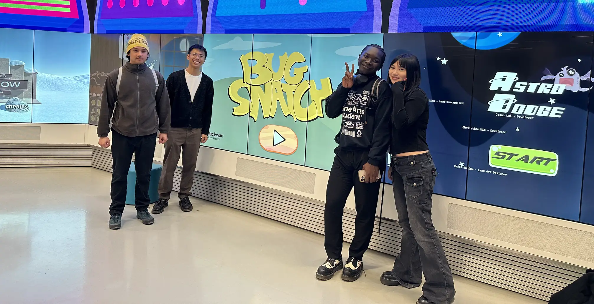
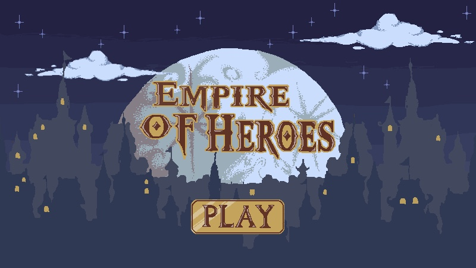
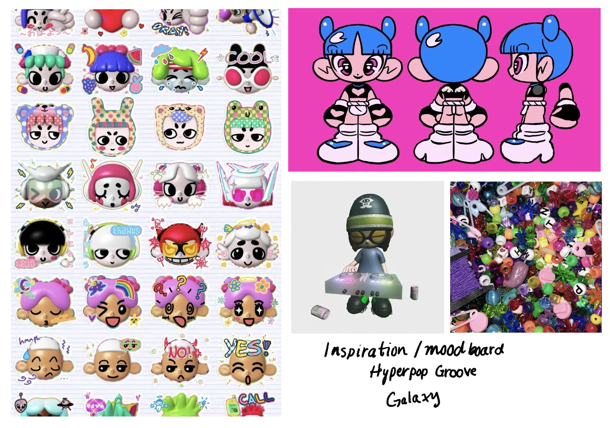
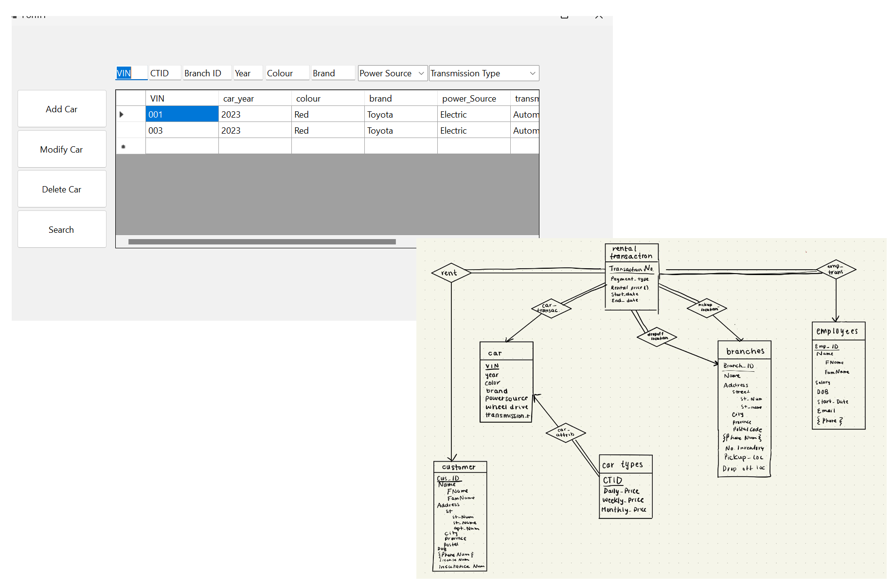
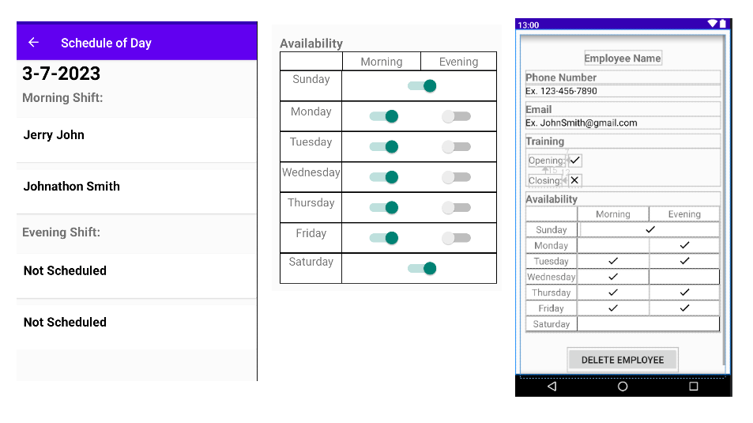
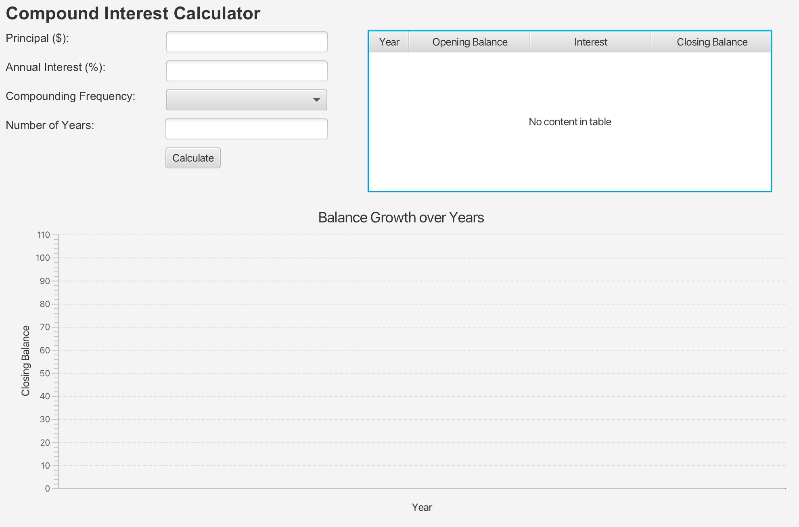

ABOUT
My coding journey began in 2020 when I took my first
programming class, Introduction to Computing. I was
majoring in biology, so I took
that class with no real objective or intentions. As you
can imagine, I unexpectantly garnered a particular
interest in the field.
From game development to web technologies, I thrive
on exploring the boundaries of what's possible in the
digital realm. Using technology and creativity to
garner a greater understanding
of the world and its interconnected system is something
I most look forward to navigating in this industry.
In my free time, I enjoy listening to music and watching
movies. I also enjoy crocheting, knitting, and painting.
GAME DEVELOPMENT PROJECTS
Bug Snatch (EPL Digital Wall Project)
[Github Repository] This project was for my capstone class. Myself and three
other students had the great opportunity to work with the
Stanley A. Milner Edmonton Public Library and create a
game that was to be displayed on their digital wall.
The game was designed primarily for kids, it's called Bug Snatch and the objective is to catch
and learn about bugs that are native to Alberta.
The game was developed using the Unity Game Engine and has
touch responsive functionality. We used agile methodology to manage the
project and foster efficient collaboration.
Empire of Heroes (Prototype)
[Github Repository] This prototype was made for my Introduction to Computer Games class. In this course, we learned how to create, market, and design a game from start to end. We especially focused on how to make an interesting interactive narrative game. I learned about the thorough process of creating a Game Design Document, as well as how to make a simple 2D pixel art RPG prototype that is Empire of Heroes. I used the Unity Game Engine to create the prototype.
Hyperpop Groove Galaxy (early development)
[Game Design Document] This project is currently being developed for my Introduction to Real Time Gaming class. In this class, we are learning sprite animation, collision detection, and simple game artificial intelligence. By the end of the semester, Hyperpop Groove Galaxy will be a 2.5D rhythm game in the Unity Game Engine that centers around the concepts of the underground nightclub scene. Players will have to complete beatmaps to progress through various cities and become the ultimate Raver.
Car Rental Project (SQL, Virtual Studio)
[Github Repository] This project was made for my Introduction to File
and Database Management class. In the class, we
learned about the entity-relationship model, the
relational model, SQL, and other relational query languages.
I worked in a group of 5 to develop an application using .NET
that simulated a car rental service. Cars were
stored in an SQL database using mySQL and the rental
service was contained in a Visual Studio GUI using C#.
The application deals with basic SQL table filtering
though car colour, makes, years, etc. Users can
filter by one parameter or multiple.
We also developed nested SQL queries that would do more complex filtering.
Android Employee Schedule App (Android Studio, Java, mySQL)
Github permissions restricted; available upon request.
This was created for my Introduction to Software Engineering course. For this project, I worked in a group of 4 to develop an application using Android Studio that simulated an employee scheduling application to be used by scheduling managers. Employees were stored in an SQL database. The application was developed in Java. The application allows users to add, modify, delete, and schedule employees. We used Agile methodology to manage the project and foster efficient collaboration.
Compound Interest Calculator (IntelliJ/Java/JavaFX)
Github permissions restricted; available upon request.

This was developed for my Introduction to Object-Oriented Programming course. I developed a simple IntelliJ/Java/JavaFX application that calculates the compound interest given a user inputted set of parameters (principle balance, interest, compound frequency, and number of years). The application then displays the calculated information on a simple GUI.